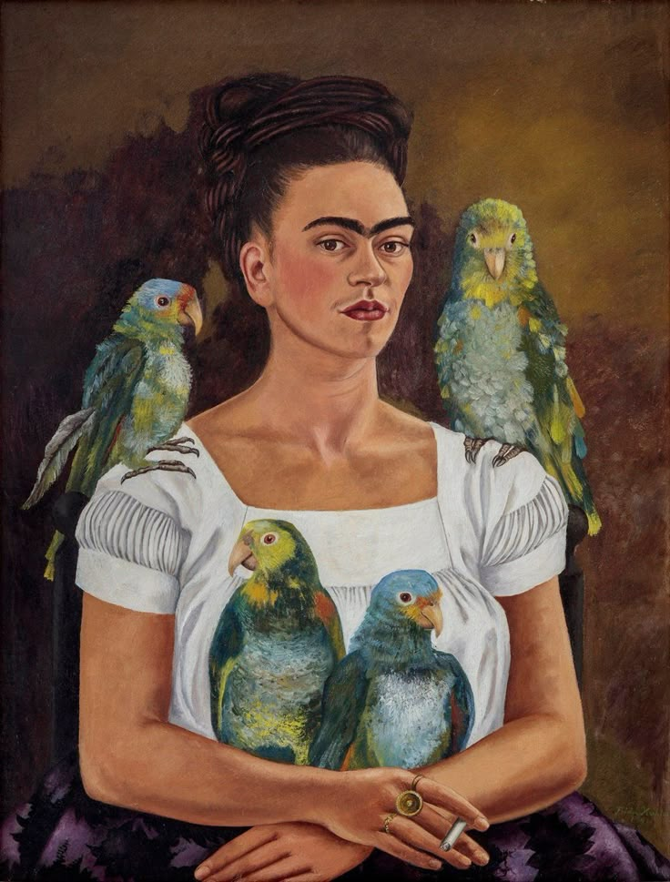
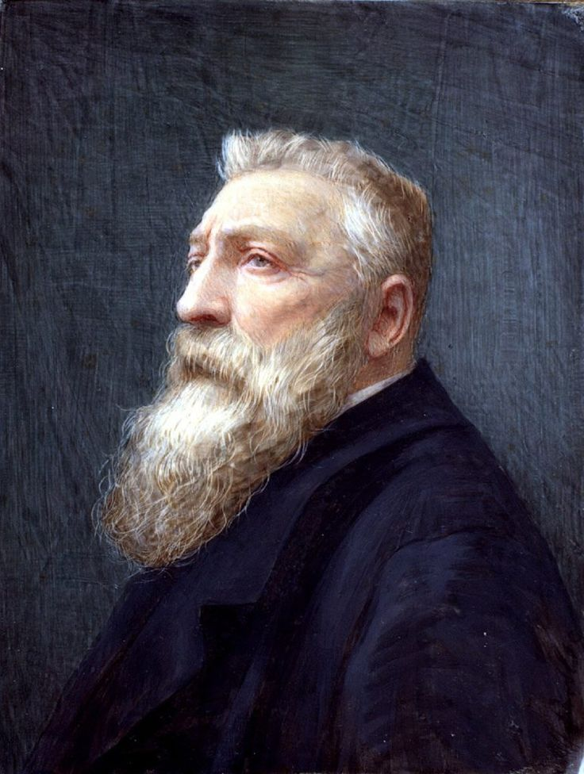
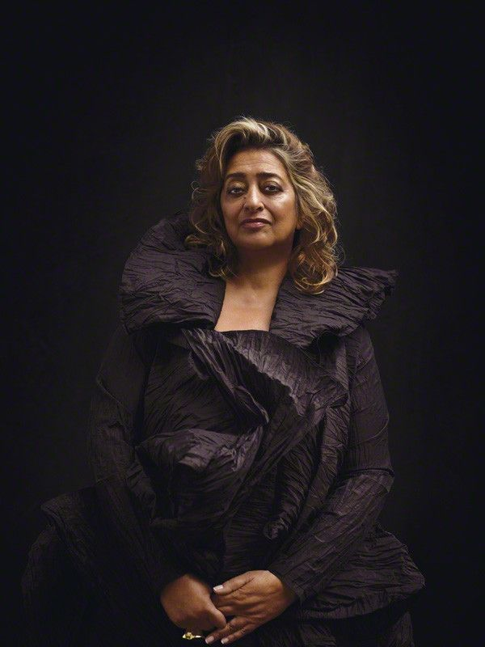

Vincent van Gogh (Pintura)
- Nacimiento / Muerte: 1853 - 1890
- Carrera: Pintor postimpresionista neerlandés, conocido por su estilo expresivo y uso vibrante del color. Tuvo una vida marcada por problemas de salud mental y reconocimiento tardío.
- Obras conocidas: La noche estrellada, Los girasoles, El dormitorio en Arlés.

Michelangelo Buonarroti (Escultura, pintura, arquitectura)
- Nacimiento / Muerte: 1475 - 1564
- Carrera: Artista renacentista italiano, maestro en escultura, pintura y arquitectura. Su trabajo influyó profundamente en el arte occidental.
- Obras conocidas: Escultura de David, pintura de la Capilla Sixtina, diseño de la cúpula de la Basílica de San Pedro.

Antoni Gaudí (Arquitectura)
- Nacimiento / Muerte: 1852 - 1926
- Carrera: Arquitecto catalán, máximo exponente del modernismo, conocido por su estilo orgánico y uso innovador de formas y colores.
- La Sagrada Familia, Parque Güell, Casa Batlló.

Frida Kahlo (Pintura)
- Nacimiento / Muerte: 1907 - 1954
- Carrera: Pintora mexicana reconocida por sus autorretratos intensos y simbólicos que expresan su dolor físico y emocional. Su obra se relaciona con el surrealismo y el arte popular mexicano.
- Obras conocidas: Las dos Fridas, La columna rota, Autorretrato con collar de espinas.

Auguste Rodin (Escultura)
- Nacimiento / Muerte: 1840 - 1917
- Carrera: Escultor francés considerado el padre de la escultura moderna. Rompió con las formas clásicas para expresar emociones y movimiento.
- Obras conocidas: El pensador, El beso, La puerta del infierno.

Zaha Hadid (Arquitectura)
- Nacimiento / Muerte: 1950 - 2016
- Carrera: Arquitecta iraquí-británica pionera en arquitectura paramétrica y futurista, primera mujer en ganar el Premio Pritzker.
- Obras conocidas: Centro Acuático de Londres, Museo MAXXI en Roma, Centro Heydar Aliyev en Bakú.